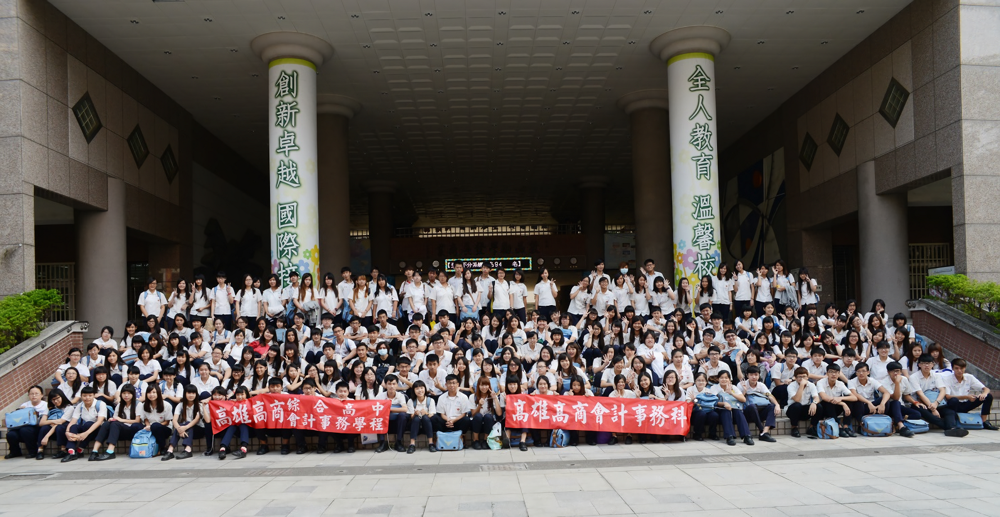

本科簡介
本校為高雄市最早設立會計科系之職業學校，民國57年成立「會計統計科」，民國77年更名為「會計事務科」至今，仍為南部會計人才培育的搖籃。
我們不僅重視國文、英文、數學等基本學科能力的養成，並重視會計、稅務、電腦等專業能力之務實教育，輔導學生在學期間取得各項專業證照，例如會計事務乙丙級證照、電腦軟體應用乙丙級證照、門市服務丙級證照、中英文輸入及office等證照。利用寒暑假期間赴「記帳及報稅代理人事務所」實習，目前與10所事務所合作，尚待簽約之事務所為2所。每年五月申報個人綜合所得稅期間，赴高雄市國稅局等十四所稽徵所實習，協助民眾申報個人綜合所得稅。
課程規劃結合實務專題之製作，培養學生獨立思考、文件製作、發表成果及團隊合作等能力。藉由我們的課程安排及結合社區業界資源，學生高三畢業升學時，無論技優推甄、甄審入學及申請入學，每年皆有亮麗的成績。
